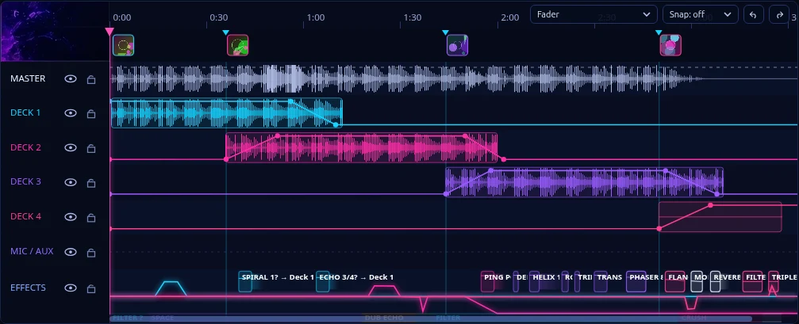
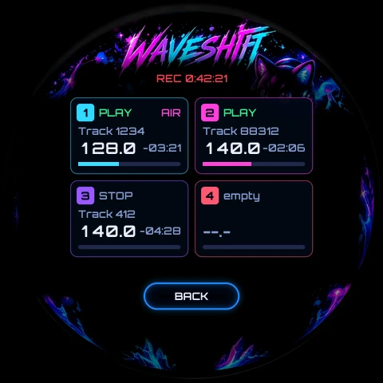
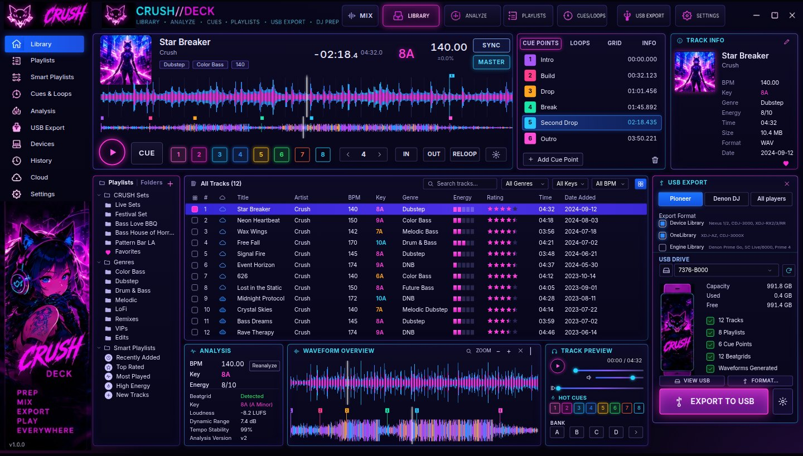
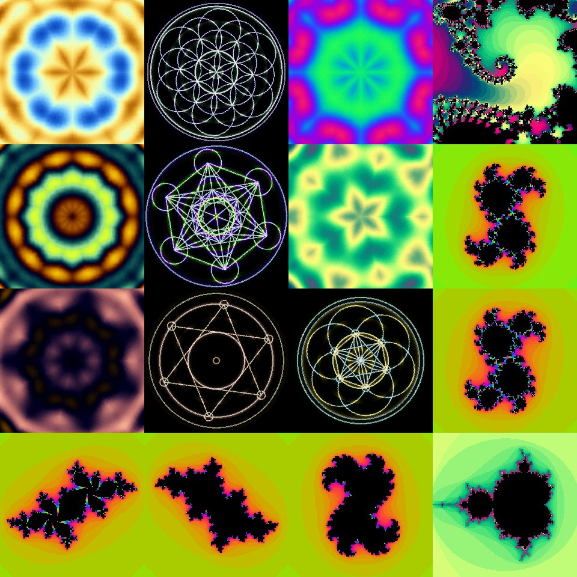
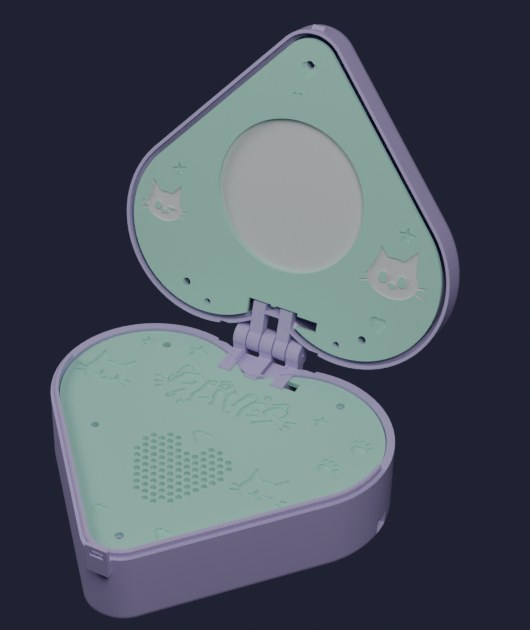
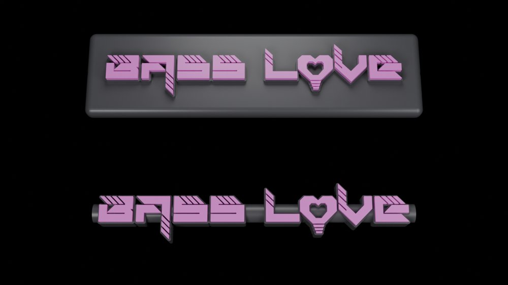
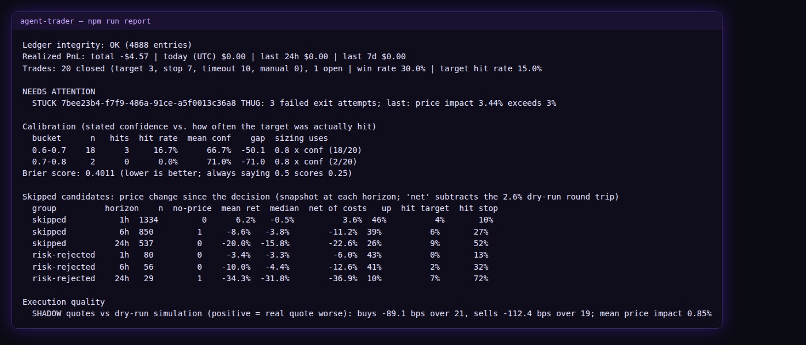
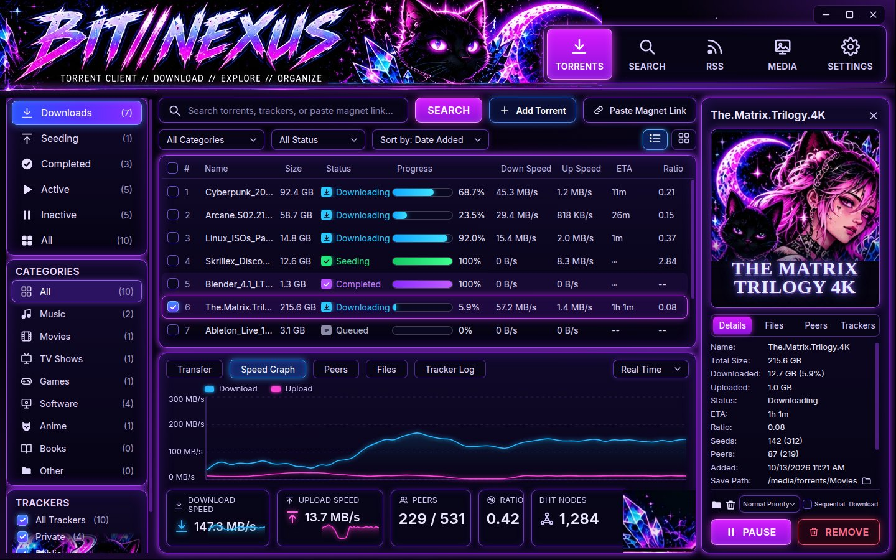

Role : Sole Creator
- Pro DJ Link and USB MIDI capture
- Set editor UI and WAV render engine with FX
- Windows installer, portable build and licensing
- RP2350 / ESP32 recorder firmware








